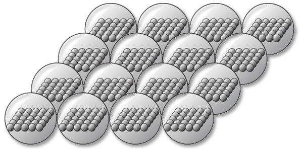
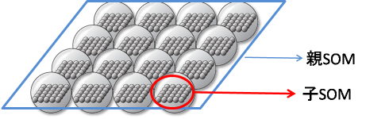
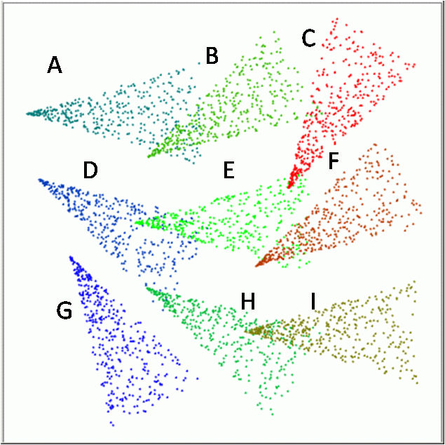

高階自己組織化マップ（SOM2 ）
高階自己組織化マップ（SOM2 ）とは
私たちの研究室では従来の自己組織化マップを一般化したモデルとしてmnSOMを提案しました．mnSOMではモジュールの構造を自由に選ぶことができます． そこでモジュールにSOM自身を用いる場合を考えるとき， それがSOM2になります．
|  |
| SOM2 の構造 |
SOM 2 のコンセプト
ここからの説明のために，モジュールの中に入る従来のSOMを「子SOM」， 子SOMをモジュールとして用いるmnSOMを「親SOM」と呼ぶことにします．|  |
| 親SOMと子SOM |
mnSOMは用いるモジュールによって獲得することができるマップが変わります．
例えば従来のSOMではベクトルデータの関係性を保存したマップになりますし， MLP-mnSOMの場合には関数同士の関係性を保存したマップを獲得できます．
それではSOM 2の場合はどうでしょうか．
SOM 2のモジュールは従来のSOMですので SOM 2がマップする対象は従来のSOMのマップです．
つまりSOM 2はマップ同士の関係性を保存したマップを獲得します．
|  |

|
| 入力空間上でのクラス集合 | SOM 2が獲得するマップ |
{kind=link}
ここでそれぞれにラベル付けされた「入力ベクトル集合」を「クラス」と呼びます． 左の図がクラス毎に色分けされた入力ベクトルです．
右の図のグリッドで分けられたそれぞれの枠が親SOMの1つのモジュールに対応し， その中に描かれている格子状のマップが子SOMのマップです．
子SOMの中にはラベルの書かれたものがあり， その子SOMはラベルに対応するクラスをマップしていることが分かります．
親SOMの方では距離の近い（似ている）子SOMを近くに配置し， 距離の遠い子SOMは遠くに配置されています．
また親SOMのマップは連続的に変化し， ラベルの書かれていない子SOMは各クラスのマップを補間しています．
このようにSOM 2は「マップのマップ」を獲得する装置ということができ， これがSOM 2の一番簡単な考え方です．
SOM2の応用
「マップのマップ」にはどのような利点があるのでしょう．例えばたくさんの人の顔画像をマップすることを考えてみましょう. このとき1人の人からは色々な角度から見た顔画像を撮ることができます．
たくさんの人から撮った様々な角度の画像を 一度に従来のSOMに学習させてもいいかもしれません．
このとき獲得できるマップは 同じ角度を向いていて似ている顔の人が近くに配置されるマップでしょう． しかしある角度を向いたときには似ている人同士が 違う角度の時も似ているとは限りません．
つまりこの方法では顔全体で見た時の総合的な類似度の判断が難しくなります．
その点でSOM 2では少し違います．
仮にAさんの様々な角度から見た顔画像をSOMでマップすれば， Aさんの顔画像マップが獲得できます． BさんからはBさんの顔画像マップができます．
SOM 2ではこのAさんやBさんの顔画像マップが子SOMとなります． そして親SOMでは「それぞれの人物の顔画像マップのマップ」ができるのです．
つまり親SOMではAさんとBさんの顔全体を総合的に評価してマップ上に配置します． これによって誰と誰が似ているなどの判断が簡単になるのです．
私たちはこのような顔画像分類への応用の他にも， SOM 2による移動ロボットの環境地図の獲得， SOMに似たアルゴリズムであるニューラルガス（NG）をモジュールとして用いた
NG×SOMによる文字の分類などへの応用をおこなっています．
Demo: SOM2 によるクラス集合のマップ
Resetボタンを押すとクラス集合も変わります．
| SOM 2によるクラス集合のマップ |
このようにSOM 2にも様々なバリエーションを考えることができます．